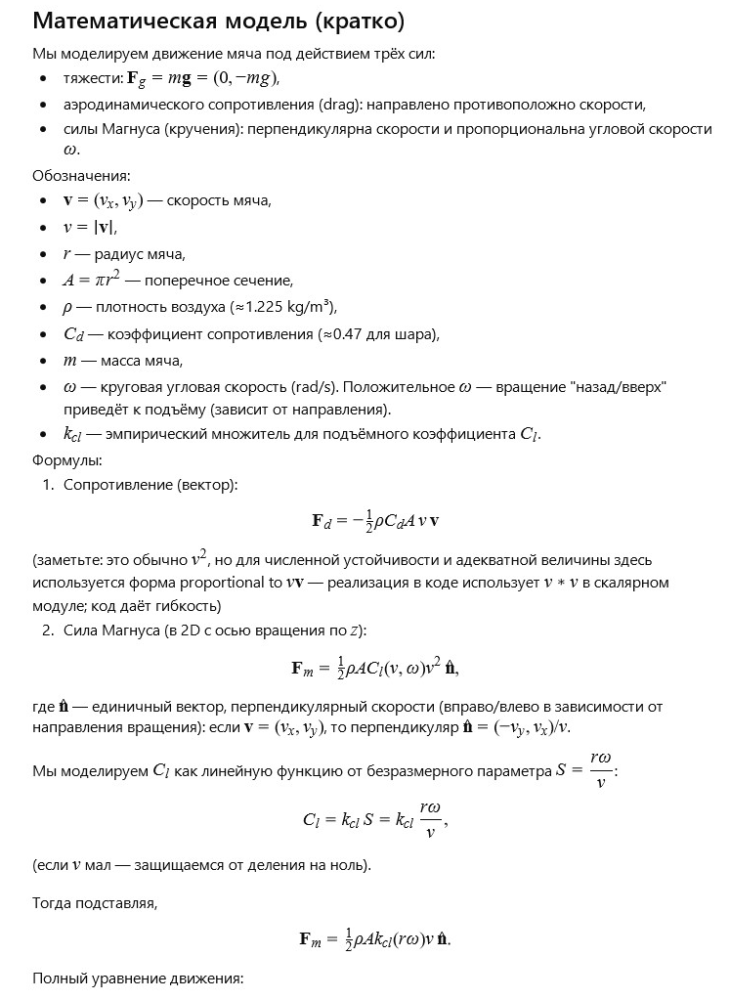
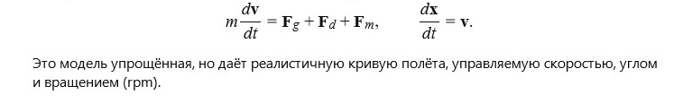

← Back to Table of Contents
(Please install the extension
Translate Image
)


Simulator: Spinning Ball (Magnus)
Initial speed (m/s)
30
Launch angle (°)
20
Spin (RPM)
1500
Ball radius (m)
0.11
Ball mass (kg)
0.43
Drag coefficient C
d
0.47
k
cl
(empirical)
1.0
Air density (kg/m³)
1.225
Start
Pause
Reset
t =
0.00
s
x =
0.00
m, y =
0.00
m
vx =
0.00
m/s, vy =
0.00
m/s
rpm =
1500
, ω =
157.08
rad/s
← Back to Table of Contents